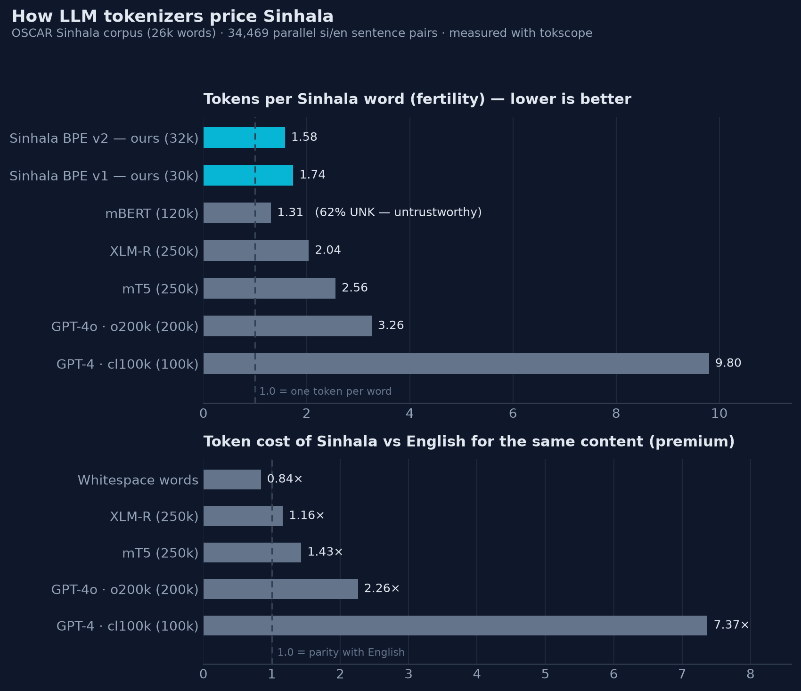

2026
I measured how LLM tokenizers price Sinhala: the same content costs
2.26× more tokens than English on GPT-4o — and a 32k BPE tokenizer
I trained beats 200k+ multilingual vocabularies by 2×. Built
tokscope to make this measurable
for any language, and published the tokenizer on
Hugging Face.

2024
Team: The X Order
Emerging victorious among 140+ teams across Designathon, Hackathon, and Datathon stages.
Demonstrated excellence in UI/UX, Full-stack Engineering, and Data Science.

Parse, validate, convert and generate Sri Lankan National Identity Card numbers — decodes
birth date and gender from both old and new formats. Zero dependencies, fully typed, on PyPI.
A SentencePiece BPE tokenizer for Sinhala trained on OSCAR — fertility 1.58 with ~0 UNKs,
outperforming multilingual vocabularies 8× its size on Sinhala text.
Authors: A.W.R.P. Karunarathna, T.U.M.N. Premarathna, R.G.S. Dilshan, W.A.K.H.R.
Wanniarachchi, Y.M.C.N. Bimsara, I.T.S. Piyatilake
Published in the 2024 9th International Conference on Information Technology Research
(ICITR).
Voicense leverages cutting-edge AI technologies to automate lecture transcription and optimized
note generation, addressing the inefficiencies of traditional note-taking. It aims to
revolutionize educational methods for both students and educators.
Simulated ant foraging behavior using Python and Pygame, focusing on pheromone-based pathfinding
to model collective intelligence.
Fine-tuned distilGPT-2 model for Sinhala text generation using XLM-Roberta tokenizer with a
translated Alpaca dataset.
Developed a web app using Flask and NLTK to perform real-time sentiment analysis on user-provided
text.
Multi-Agent System simulating collaborative brainstorming to generate and automate solutions.
Powered by AI Agents and LLMs.
Intelligent system leveraging YOLO and fuzzy logic to detect elephants in rural areas, aiming to
reduce Human-Elephant Conflict (HEC).
Automated data cleaning and analysis pipeline powered by Google Gemini, capable of handling
diverse dataset natures.